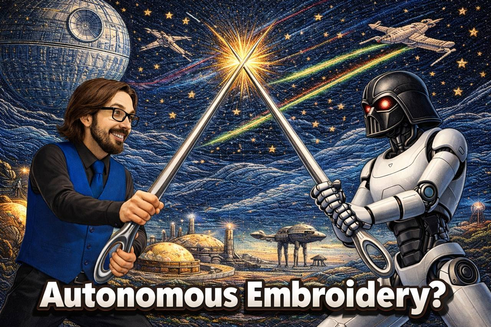

In the quiet moments of the holiday season, while many were engrossed in the warmth of tradition, a subtle yet profound shift was taking place in the world of robotics. TARS Robotics, with little fanfare, achieved something that hints at a future where machines may rival human dexterity.
While embroidery might seem an unusual metric for technological advancement, it encapsulates a quiet revolution in robotics. This delicate craft, often associated with human touch, is now being attempted by machines with remarkable precision. Few are aware of how significant this is... yet it stands as a testament to the strides being made in AI and robotics, beyond the usual headlines of speed and strength.
The core of this development lies not in the act of embroidery itself, but in the underlying capabilities it reveals. Traditionally, robots excel in tasks that require repetition and brute force. However, stitching requires a blend of fine motor control, sensory feedback, and adaptive responses... qualities that have eluded machines until now.
Embroidery tasks demand the robot to thread a needle with sub-millimeter accuracy, a feat that involves coordinating vision, touch, and precise movements. The robot must maintain consistent tension and correct its motions in real time, a far cry from the rigid programming of earlier automation. It signals a departure from simple task execution to nuanced interaction with complex environments.
Beyond the novelty, this development has implications across various industries. In advanced manufacturing and micro-assembly, such dexterity could lead to more intricate and delicate designs, potentially revolutionizing production lines. Medical fields, particularly surgical robotics, stand to benefit from robots capable of performing precise operations without the need for human intervention.
Electronics repair, textile innovation, and even mundane tasks like sewing or crafting are on the cusp of transformation. The ability of machines to handle tasks traditionally deemed too delicate opens doors to efficiency and creativity, allowing humans to focus on more complex problem-solving. Yet, it is important to recognize the limitations... as this technology develops, ethical considerations and the potential displacement of skilled labor remain pressing concerns.
Looking ahead, the journey of robots achieving human-like dexterity is only beginning. As we approach 2026, the incremental improvements we witness today hint at a future where machines seamlessly integrate into the fabric of our daily lives, performing tasks once reserved for skilled craftsmen.
While grand predictions often overshadow the steady progress in technology, it is these quiet, incremental advancements that collectively steer us towards a new era of human-machine collaboration. An era where the line between human skill and robotic precision blurs, not with a bang, but with the quiet hum of a robot threading a needle.
Dr.WinMac explores the infrastructure and automation changes that affect everyone, explained without jargon.
Back to Blog